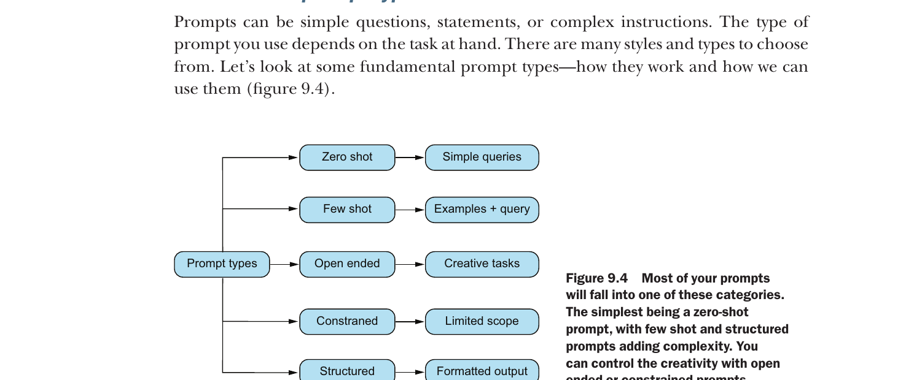
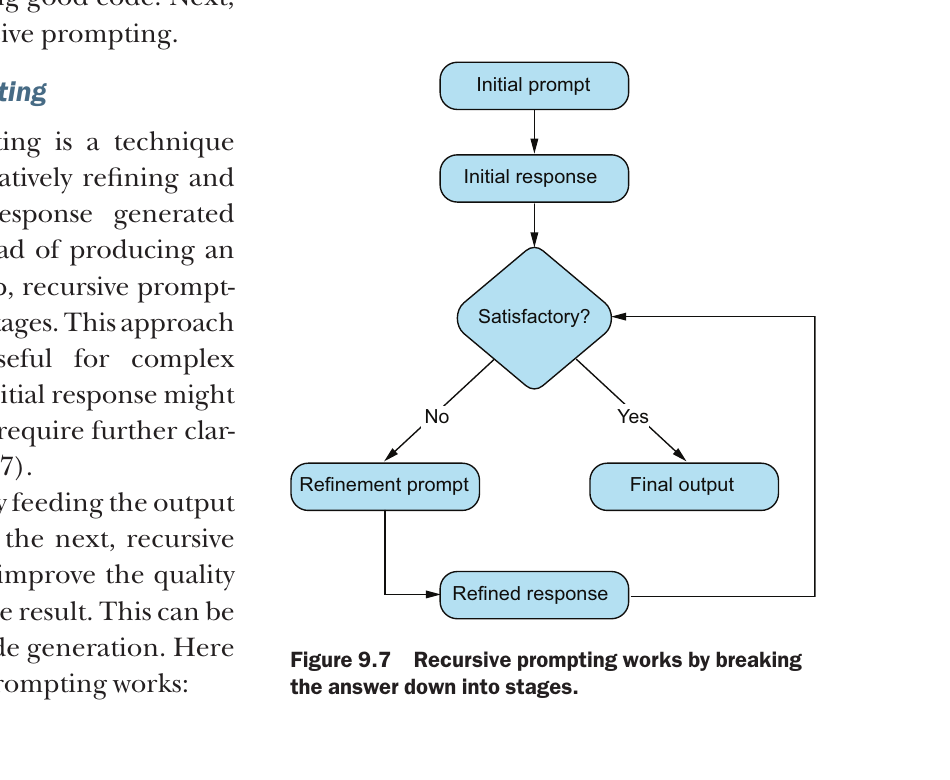
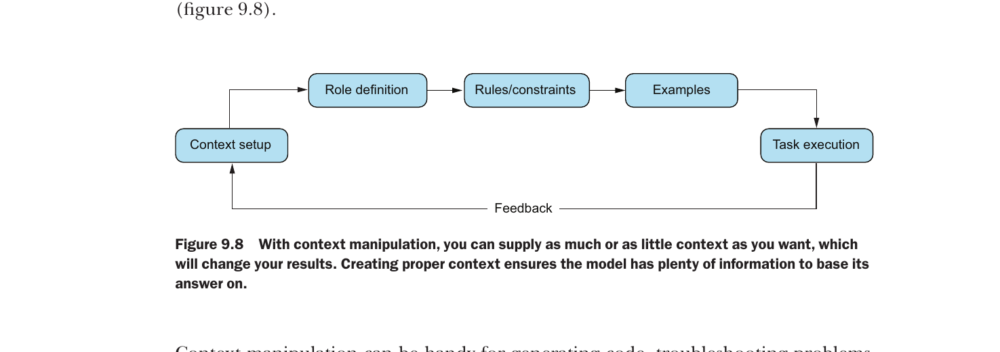
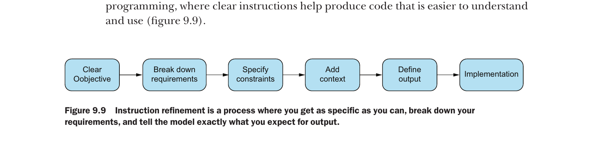
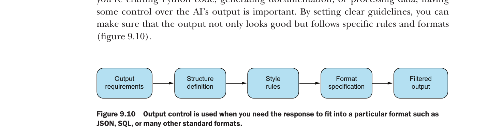

Week 09 — Prompt engineering
Core idea: Prompt engineering is interface design for AI tools. You are not “asking a question” — you are specifying an input contract (context + constraints + success criteria) so the output is testable.
Week map (what we’re actually learning)
This week builds a practical toolkit for getting reliable work out of coding assistants.
- 9.1 Understanding prompt engineering: why prompts fail, and what “better prompts” look like
- 9.2 Anatomy of a prompt: context, instructions, examples, and expected format
- 9.3 Crafting the ultimate prompt: using the model to improve your own prompts
- 9.4 Fundamental prompt types: zero-shot, few-shot, open-ended, constrained, structured
- 9.5 Advanced prompt types: chain-of-thought, recursive prompting, context manipulation, refinement, output control
- 9.6 Prompt techniques for programmers: how this becomes a daily workflow habit
Micro-quotes from this week (short + placed where relevant)
“Instead of getting generic responses, strong prompts can greatly enhance the quality, accuracy, and usefulness of AI-generated code and documents.”
“Some parts of prompt engineering may seem natural—like how we learned to improve our search engine questions over time.”
“Let’s explore how to create better prompts to get the best results, save time, and increase productivity.”
“Context is the backbone of any good prompt.”
“Provide concrete examples to illustrate desired output.”
“Zero-shot prompts are very basic and concise.”
“Few-shot prompting lets models generate from just a few examples.”
“These types of prompts limit the scope of the model’s response.”
Key terms (bold on first use)
- prompt: the input you send the model; in practice it’s a specification of what you want.
- context: background info the model needs to interpret the task (code, data shape, constraints).
- constraints: boundaries you set (language, complexity, libraries, performance, security rules).
- few-shot: showing a couple of examples so the model copies the pattern.
- structured prompt: a prompt that forces the output into a predictable structure (JSON, table, sections).
- output control: techniques that reduce randomness by restricting response shape.
Figures used in these notes (≈10 max, placed where they matter)
These images were extracted from the Week 09 PDF and are used inline below.
9.1 Understanding prompt engineering
Prompt engineering is not “tricking” the model. It’s about reducing ambiguity.
Why prompts fail in coding
Coding tasks are brittle:
- small mistakes cause crashes
- missing constraints produce insecure or inefficient code
- a “mostly correct” solution can still be useless
When prompts fail, it’s usually one of these reasons:
- Unclear task (what action do you want?)
- Missing context (what codebase? what inputs?)
- No success criteria (how do we judge “good”?)
- No output format (what should the response look like?)
- No constraints (libraries? style? performance?)

The “bad prompt → bad output” pattern
A classic failure is:
- Prompt: “Fix this code”
- Output: generic advice, or wrong assumptions
Instead, you want a prompt that provides:
- the exact error
- the code
- the expected behaviour
- what you already tried
- how you want the answer returned
9.2 Anatomy of a prompt
A good prompt is a communication bundle.
Think of it as four parts:
- Context — what the model needs to know
- Instructions — what to do
- Examples — patterns to follow
- Format contract — the exact structure of the response

Context: what counts as context?
Context can be:
- the code you’re working on
- the data format / schema
- environment details (OS, Python version)
- constraints: libraries allowed, complexity limits
Rule of thumb: if a human dev would ask for it before helping you, the model needs it too.
Instructions: verbs matter
Good instruction starts with a clear verb:
- “refactor”
- “debug”
- “generate tests”
- “explain”
- “convert”
Bad instruction is vague:
- “help me”
- “improve this”
Examples: show what “good” looks like
Few-shot prompting is basically pattern copying.
If you want a specific style:
- show 1–2 examples
- keep them short
- keep formatting consistent
Format contract: stop the model drifting
If you don’t specify format, the model will:
- ramble
- mix explanation and code
- invent file structures
So you specify:
- “return JSON only”
- “return only Python code”
- “return a markdown checklist”
9.3 Crafting the ultimate prompt
This section introduces a powerful move:
✅ Use an LLM to improve your prompt before using it for the real task.
Instead of:
- “Write an API request tutorial”
You ask the model:
- “Improve this prompt so it produces the best possible tutorial.”

Prompt-refinement template
Use this when you want a high-quality response.
raw_prompt = "Give me instructions on how to send an HTTP request to an API and handle errors."
refiner = f"""
You are an expert prompt engineer.
Improve the prompt below by:
- adding missing context questions
- adding constraints
- specifying output format
PROMPT TO IMPROVE:
{raw_prompt}
Return the improved prompt only.
"""
print(refiner)What you’re doing:
- turning fuzzy intent into a structured request
- forcing the model to ask missing questions
9.4 Fundamental prompt types
This week introduces several “prompt families”.
9.4.1 Zero-shot prompting
Zero-shot = no examples.
Example:
- “Write a Python function to validate emails.”
Best when:
- the task is common
- the output shape is simple
Risk:
- the model guesses assumptions
zero_shot = "Write a Python function that validates an email address."
print(zero_shot)9.4.2 Few-shot prompting
Few-shot = provide examples.
Best when:
- you care about formatting
- you want a consistent style
few_shot = """
You are a Python developer.
Example 1:
def double(x):
return x * 2
Example 2:
def square(x):
return x ** 2
Now write a function:
def cube(x):
"""
print(few_shot)9.4.3 Open-ended prompts
Open-ended = exploration.
Best for:
- comparing tools
- brainstorming designs
- generating options
Bad for:
- precise code requirements
9.4.4 Constrained prompts
Constrained prompts are strict.
Examples:
- “List exactly three built-in Python data structures.”
- “Return only code.”

constrained = "List exactly three built-in Python data structures."
print(constrained)9.4.5 Iterative prompts
Iterative prompting = conversation loop.
You:
- ask
- evaluate
- refine
This behaves like debugging.
prompt_v1 = "Explain why this test is failing."
prompt_v2 = "Explain why this pytest test is failing. Use bullet points and include the fixed code."
print(prompt_v1)
print(prompt_v2)9.4.6 Structured prompts
Structured prompts enforce a schema.
Example:
- “Return JSON with keys: files, changes, reasons”
This is huge for engineering teams.
structured = """
Return JSON only.
Schema:
{"files": [{"path": "...", "change": "...", "reason": "..."}]}
Task: Propose refactor changes for a small Python script.
"""
print(structured)9.5 Advanced prompt types
These techniques are about increasing reliability.
9.5.1 Chain-of-thought prompting
In this week, chain-of-thought means:
- encourage step-by-step reasoning
- reduce “jumping to conclusions”
Use carefully: the model may sound confident even when wrong.

9.5.2 Recursive prompting
Recursive prompting = prompt → output → prompt again.
Example workflow:
- generate draft
- critique draft
- revise draft
This is similar to:
- code review loops
- iterative refactoring
9.5.3 Context manipulation
Context manipulation = changing what the model sees.
Examples:
- include only the relevant file (not the whole repo)
- provide a minimal failing example
- redact secrets and irrelevant text
9.5.4 Instruction refinement
Instruction refinement = tuning wording.
Small changes matter:
- “explain” vs “teach”
- “brief” vs “detailed”
- “code only” vs “code + rationale”

9.5.5 Output control
Output control = forcing response format.
This is key when you need:
- documentation
- commit messages
- structured change requests
9.6 Prompt techniques for programmers
This part is where this week becomes “real world”.
Use prompts like tool interfaces
Think:
- prompt = function signature
- context = arguments
- constraints = preconditions
- output format = return type
A reliable prompt pattern (copy/paste)
prompt = """
You are a senior Python developer.
Task: {task}
Context: {context}
Constraints: {constraints}
Output format: {format}
Return only the output format requested.
"""
filled = prompt.format(
task="Write pytest tests for apply_discount(price, discount)",
context="discount must be between 0 and 1; negative should raise ValueError",
constraints="Use pytest; include edge cases; no extra commentary",
format="Python code"
)
print(filled)Why this works:
- clear role
- explicit requirements
- predictable output

Worked examples (week-aligned)
Example A: Debugging with context + constraints
Bad prompt:
- “Fix this code”
Better prompt:
- include error
- include expected behaviour
- request specific output
Example B: Generating documentation with output control
If you want documentation:
- specify audience
- specify sections
- specify formatting

Example C: Writing tests as a contract
Strong prompts include:
- what to test
- edge cases
- expected failures

Pitfalls and anti-patterns
1) Assuming the model “knows what you mean”
It doesn’t.
If it can interpret your prompt two ways, it will choose one randomly.
2) Treating a correct-looking answer as correct
AI output must be validated:
- run the code
- write tests
- review logic
3) Overloading the prompt
Too much irrelevant context reduces quality.
Use:
- minimal failing examples
- focused snippets

Summary: what you should actually remember
- Prompts are specs, not questions
- Context prevents guessing
- Constraints reduce nonsense
- Examples control style
- Output control makes responses testable
- Iteration is normal — treat it like debugging
Quick self-check (5 minutes)
- Rewrite a bad prompt into a structured prompt.
- Add one constraint that prevents security issues.
- Add an output format that makes the result testable.
- Add one example to enforce consistent style.
Verification report (Week 9)
- line count: 507
- number of code blocks: 7
- number of micro-quotes: 8
- number of images referenced: 10